The idea
A curved carbon-fiber beam that feels
where, and how hard, it is touched.
A curved carbon-fiber beam carries eight strain gauges that read how it bends. A touch anywhere bends the whole beam, so a model of the beam can work back from the readings to where it was touched and how hard.
Mounted on a mobile robot as an executor and a sensor, it let the robot measure objects, back away from obstacles, hold a set contact force and carry an object together with a second robot.
01 / Why a beam
Feeling contact
through a beam.
What can a curved carbon-fiber beam feel that a force sensor at its base can't?
A force/torque sensor at a robot's wrist or in its joints measures the load where it is mounted, so it detects contact only at a few locations. Tactile skins spread sensors over a surface, but each sensor is read on its own, so a large skin with fine resolution becomes complex to build and to wire.
This sensor uses a slender elastic beam as the sensing medium. A touch anywhere along it changes the shape of the whole beam, so a few strain gauges at fixed spots can tell where it was touched and how hard. The same beam is compliant, so it also cushions impacts.
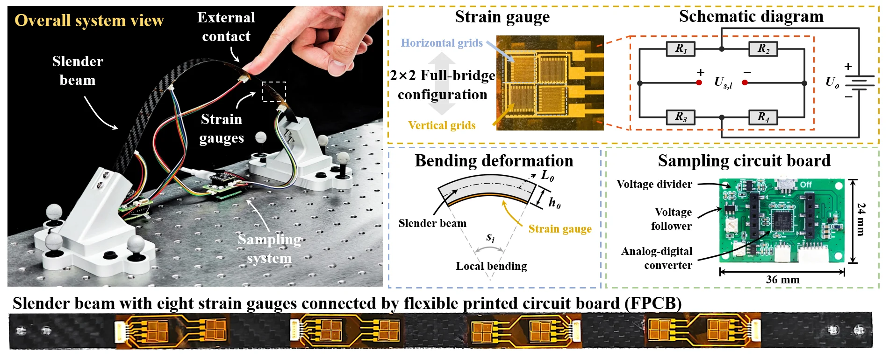
02 / Hardware
The sensing
hardware.
What turns a curved carbon-fiber beam into a sensor?
The beam is carbon fiber, 300 mm long with a 14 × 0.5 mm cross-section. It is straight when free and curves once aluminum mounts fix both ends to the table. It carries eight strain gauges on its back, at discrete positions. Each is a 2 × 2 grid wired as a full Wheatstone bridge, so its voltage changes linearly with the local bending and is robust to temperature drift.
The gauges and their wiring are etched as one flexible printed circuit, with no soldered jumper wires, and the thin circuit adds a negligible constraint to the beam. A sampling board slightly larger than a 50-cent coin filters, amplifies and digitizes the signals; one board samples four gauges at about 930 Hz.
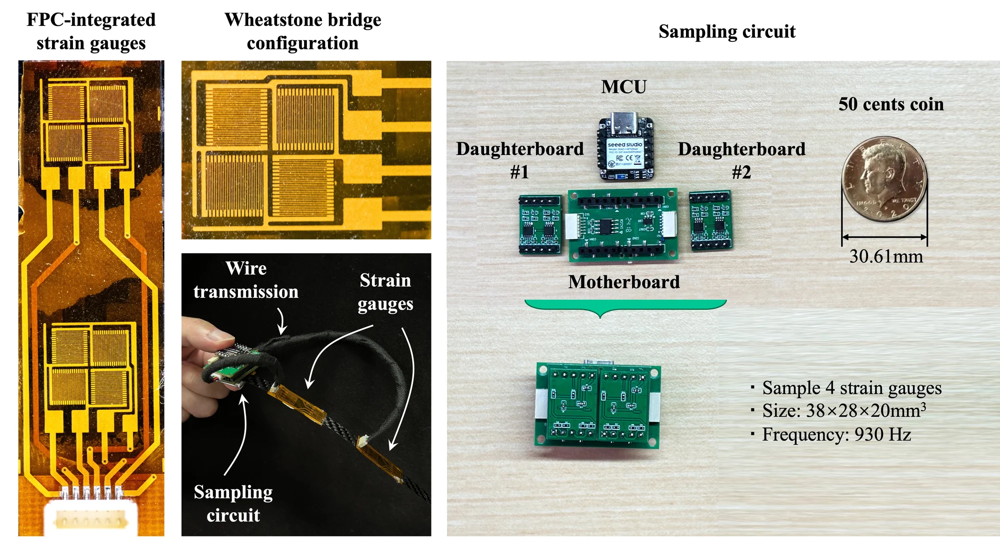
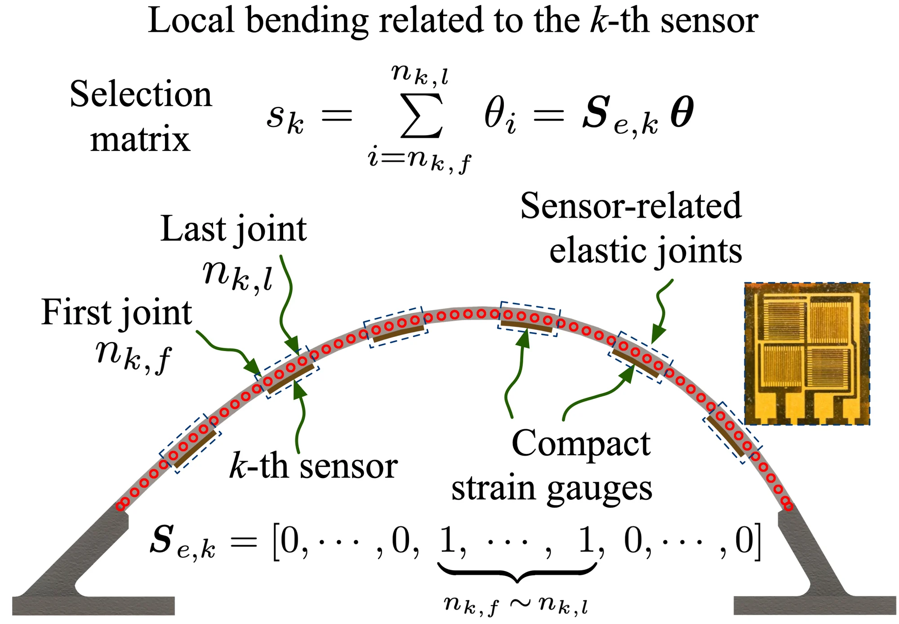
03 / Sensing method
From bending
to contact.
How do eight readings reveal two unknown touches?
The model treats the beam as 60 rigid segments of 5 mm joined by elastic joints, so its large deflection becomes the statics of a chain of links. The equations are solved by Newton–Raphson with an analytical Jacobian. Each gauge reads the summed bending of the joints it covers.
The model treats each contact as frictionless, so a touch brings two unknowns, its position and the size of its normal force: two touches make four unknowns and need at least four gauges. With friction, each touch would add a tangential force, making six unknowns and needing at least six gauges. The prototype's eight gauges over-determine either case, and the model is solved by least squares. The estimate is built in three steps.
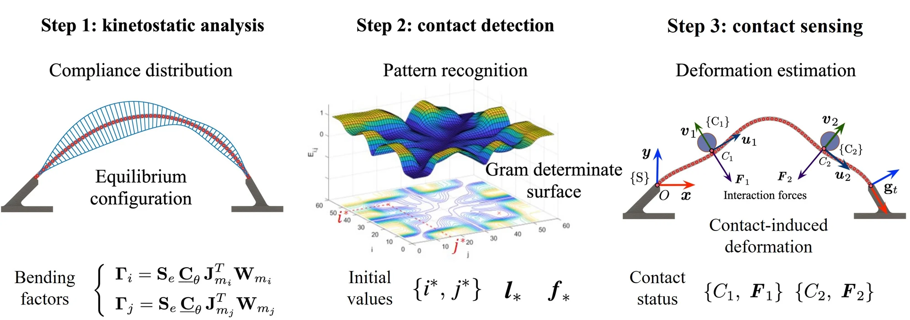
Match
Compare the readings with precomputed bending patterns of unit loads at every pair of segments, and keep the closest pair
Linearize
With the contact segments fixed, solve the small-deformation model for the two force magnitudes
Refine
Start a Newton–Raphson solution of the large-deformation model from that estimate
Because the readings arrive continuously, each refinement starts close to the answer. With the robot, the reference sensors and the gauges linked in a C++ framework, the whole system ran at about 30 Hz for two contacts.
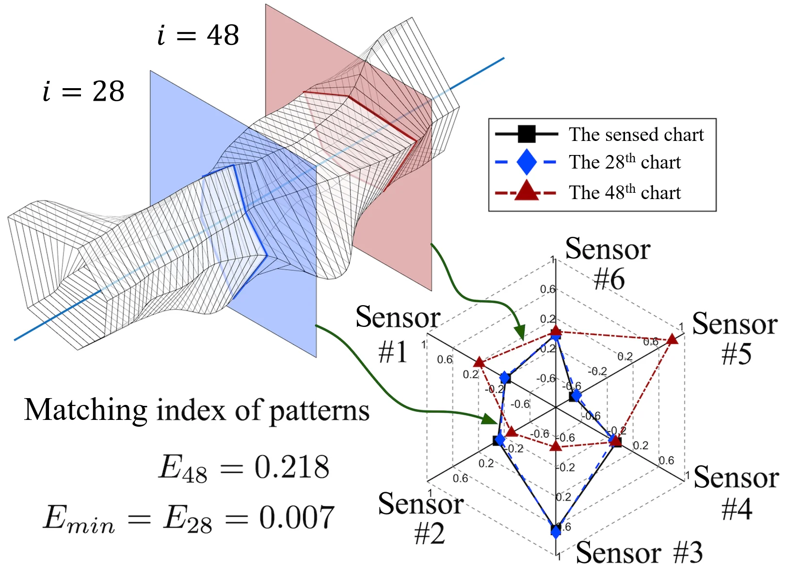
04 / Validation
How accurate
is it?
How accurately does the beam locate a contact and measure its force?
A robot arm pressed the curved beam with a single pulley at 57 locations on a 3 × 19 grid, while a force/torque sensor measured the contact force and a tracker measured the pulley's position. From these data the authors calibrated the joint stiffness, each gauge's sensitivity and the gauges' exact positions. With the calibrated parameters, the mean errors were 1.74 mm in position and 0.11 N in force, about 7.68% of the contact force.
Then two pulleys pressed at once, 100 to 180 mm apart, in 30 configurations. The mean position errors were 3.38 mm for the left pulley and 2.90 mm for the right, and the mean force errors 0.13 N and 0.19 N, about 8.50% and 8.96% of the forces.

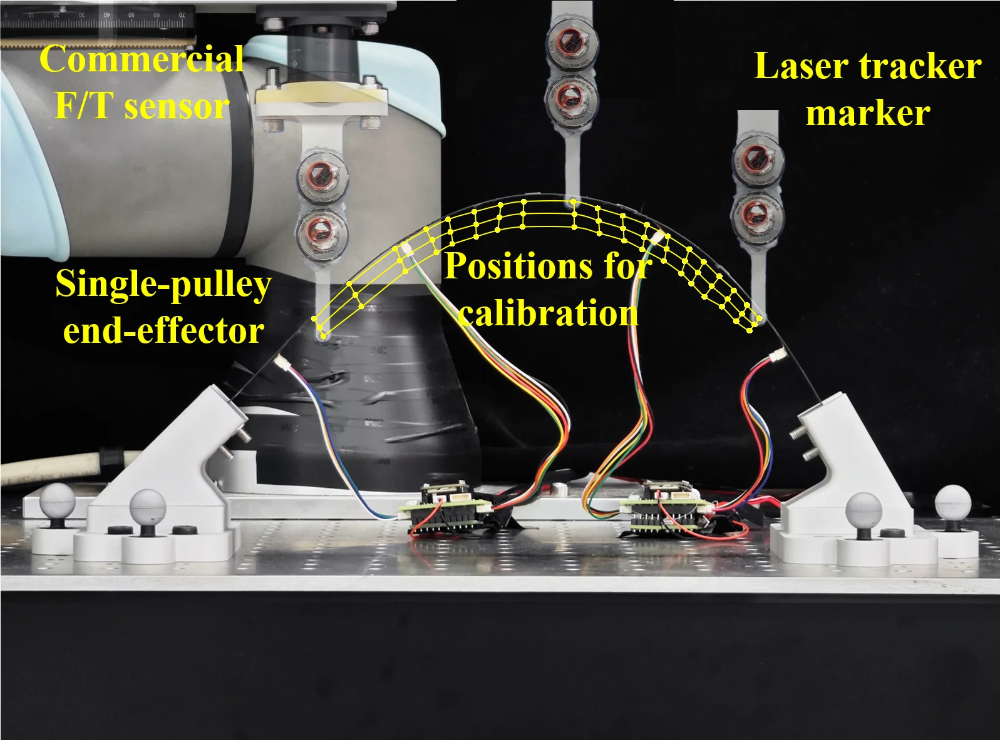

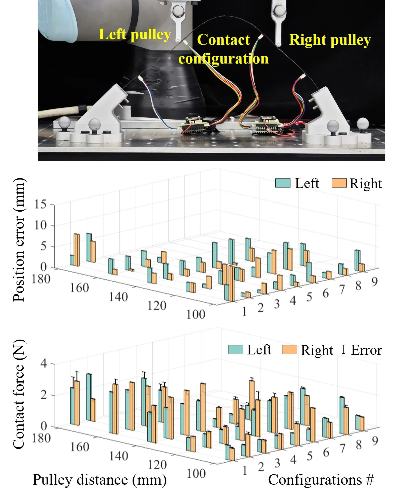
05 / On a mobile robot
A beam
that feels.
What can a mobile robot do once its beam can feel?
One curved sensing beam spans the front of an omnidirectional mobile robot. The gauge signals go over Bluetooth to a computer that runs the sensing model and drives the robot. The beam is both the robot's executor and its sensor: it presses on objects and holds them, and it senses where, and how hard, it touches them.
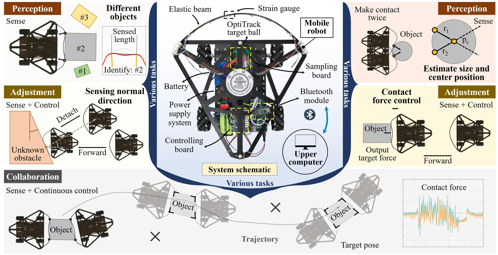
Three boxes were touched at the left, middle and right of the beam, five times each: 45 trials. Every trial identified the correct box, with a mean length error of 2.33 mm, within 2% for boxes of 100 to 200 mm. Within each set of five trials, the estimates varied by no more than 3.70 mm.
See the length results

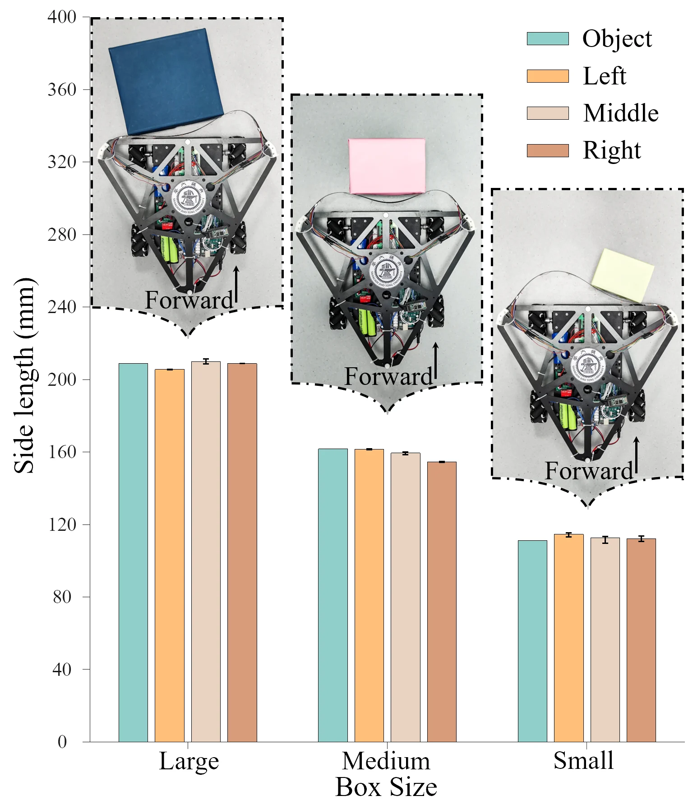
The robot touched a cylinder 130 mm in diameter, backed off, moved 110 mm sideways and touched it again. The two contact normals cross at the center, and the distances to it give the radius. Over five trials from different starting points, the mean radius error was 3.66 mm (at most 5.61 mm) and the mean position error 10.60 mm (at most 12.88 mm); the robot then drove straight toward the center. The robot moves open-loop on its wheel encoders, and the authors note that its motion errors affect these results.
See the cylinder result

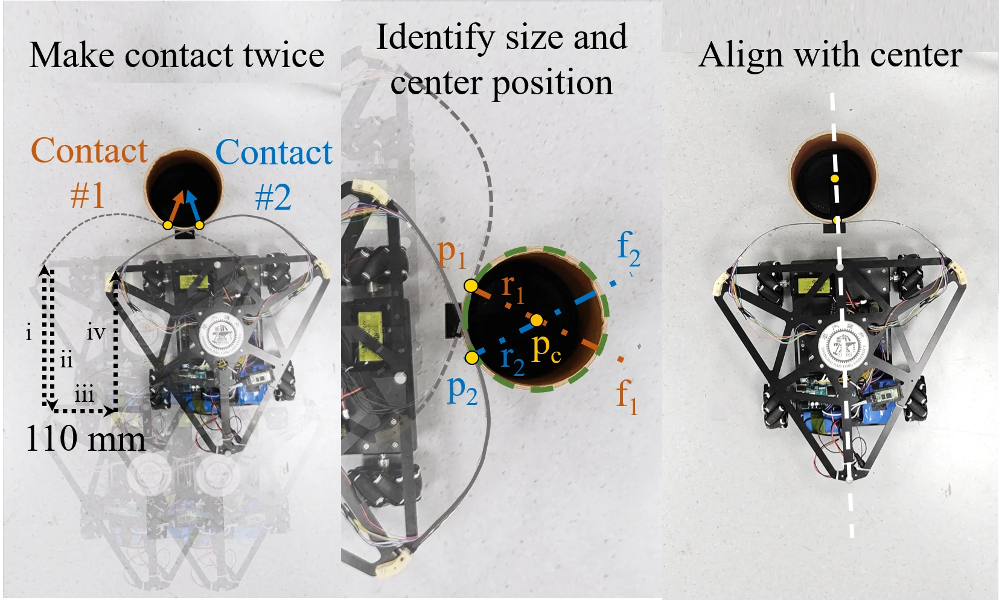
The robot drove into an object at an unknown distance at 50, 150 and 250 mm/s, five times each, while a PID controller adjusted its speed to hold a 5 N contact force. The force settled within 0.52 s in every condition, in 0.24 s at the lowest speed, with a steady-state error below 0.88 N, and the force identified from the beam stayed close to the reference sensor's. The beam's elastic deflection softens the impact even without control, which leaves the controller room to act.
See the force-control results

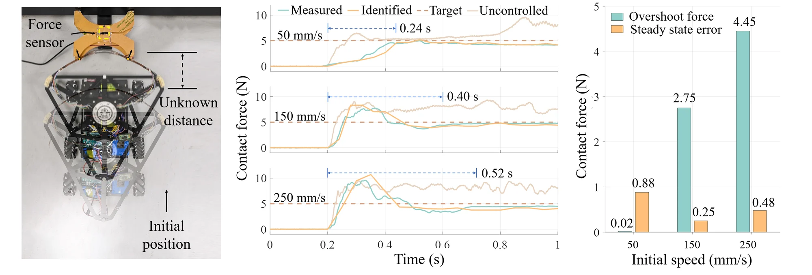
The rear robot follows a set path while the front robot adjusts its position to keep a 3 N clamping force on the object: enough to hold it (more than 0.6 N) without making the wheels slip (no more than 10 N). On a straight line, the force measured by a sensor inside the object fluctuated around the target but stayed in that range, and the beam's estimate followed it with a mean error of 0.67 N. With force feedback, the object was carried to the end along a straight line, a circular arc, a zigzag line and an S-type curve; without it, the collaboration failed during or at the end of the run.
See the carrying results

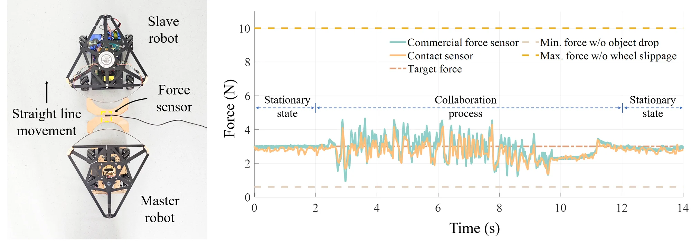

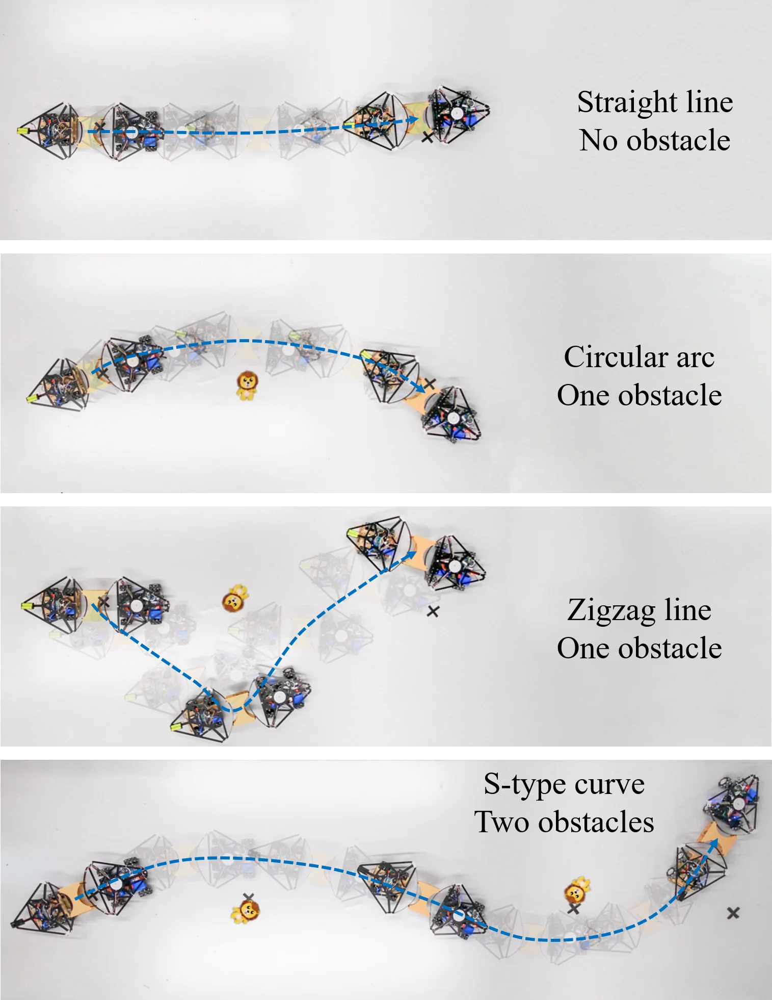
To back away from obstacles, the robot drove into a flat board set at angles from −30° to 30° in steps of 10°. It took the board's direction as the beam's tangent at the contact point and backed away along the normal. Over the seven angles, the backing-away direction was off by 2.41° on average; the sensed direction alone, without the robot's motion errors, by 1.19°.

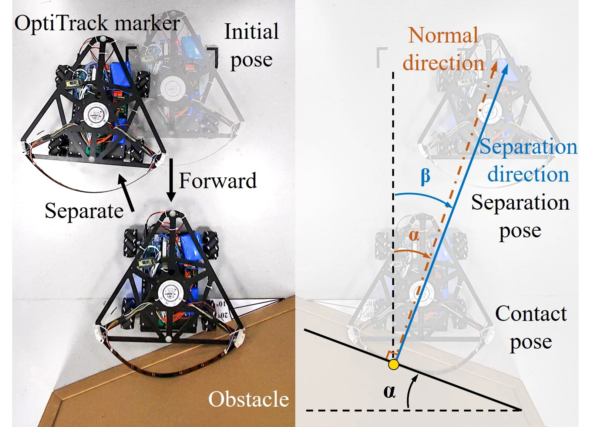

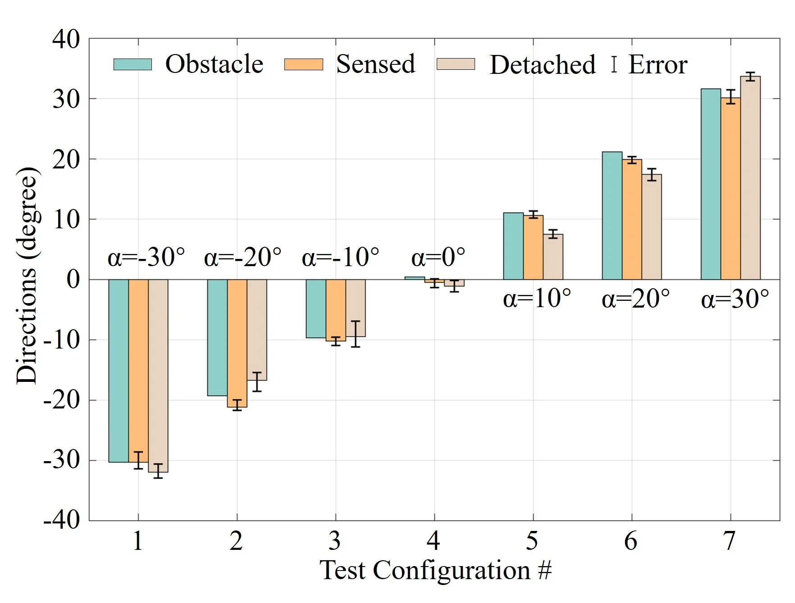
06 / A virtual piano
Playing
the beam.
How fast does it respond?
To show the sampling system's real-time response, the authors built a virtual piano from eight short carbon-fiber cantilevers, 75 × 15 × 0.4 mm, each with one strain gauge and one note from C4 to C5. Pressing a key bends it, and how far it bends sets how loud its note plays.
The eight gauges are read through a serial port at a steady 100 Hz, fast enough to catch several keys pressed together, so chords play as well as single notes.

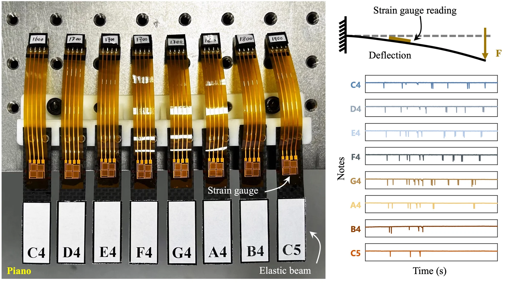
Beyond the paper
Several keys at once,
on one curved beam.
Another demonstration of multi-point sensing: a virtual piano with numbered keys along one curved carbon-fiber beam, which senses single notes and two notes pressed at once.
Questions & answers
Common questions.
Why not put a force sensor at the base?
A force/torque sensor measures the load where it is mounted, so on its own it detects contact only at a few locations. Reading the bending at eight points along the beam lets the model locate contact anywhere on it, and two contacts at once.
How many strain gauges does it need?
Without friction, which is how the paper models the contact, two contacts mean four unknowns, two positions and two normal-force magnitudes, so at least four gauges. With friction, each contact adds a tangential force: six unknowns, so at least six gauges. The prototype's eight gauges over-determine either case, and the frictionless model is solved by least squares.
Does it handle large deformations?
Yes. The small-deformation model gives a first estimate, which starts a Newton–Raphson solution of the full large-deformation model. Because the readings arrive continuously, each step has only a small change to account for, and the system ran at about 30 Hz.
Why does the beam's compliance help?
It cushions collisions and gives the controller more time to respond. In the force-control test, the beam's deflection softened the impact even without control, and with control the force settled at the 5 N target within 0.52 s at speeds up to 250 mm/s.
What are the limitations?
The model covers bending in the beam's plane only, so forces out of that plane go undetected, and it neglects friction at the contact. The thin carbon-fiber beam cannot withstand large forces, and how many gauges fit on it depends on how small they can be made. The authors suggest capturing torsion and combining data-driven methods with the model.
Paper & authors
From local bending
to global contact.
Contact sensing methodology based on propagation of interaction-induced deformation in elastic beams
Genliang Chen, Junjie Luo, Siyue Yao, Hao Yuan, Yanjun Wang, Tao Yu, Hao Wang, and Zhongqin Lin.
The International Journal of Robotics Research, OnlineFirst, 2026.
Citation / BibTeX
@article{chen2026contactsensing,
title = {Contact sensing methodology based on propagation of interaction-induced deformation in elastic beams},
author = {Chen, Genliang and Luo, Junjie and Yao, Siyue and Yuan, Hao and Wang, Yanjun and Yu, Tao and Wang, Hao and Lin, Zhongqin},
journal = {The International Journal of Robotics Research},
year = {2026},
note = {OnlineFirst},
publisher = {SAGE Publications},
doi = {10.1177/02783649261419836}
}Full affiliations
- The Meta Robotics Institute, and the State Key Laboratory of Mechanical System and Vibration, Shanghai Jiao Tong University, Shanghai, China
- The Shanghai Key Laboratory of Intelligent Robotics, Shanghai Jiao Tong University, Shanghai, China
- The Institute of Marine Equipment, Shanghai Jiao Tong University, Shanghai, China
- The Shanghai Key Laboratory of Digital Manufacturing for Thin-Walled Structures, Shanghai Jiao Tong University, Shanghai, China
* Corresponding author: Genliang Chen
Supplementary video
Watch the mobile-robot video.
Supplementary video S1: measuring box lengths, locating a cylinder, controlling contact force, and pairs of robots carrying an object along a zigzag line and an S-type curve, with and without force-based control.